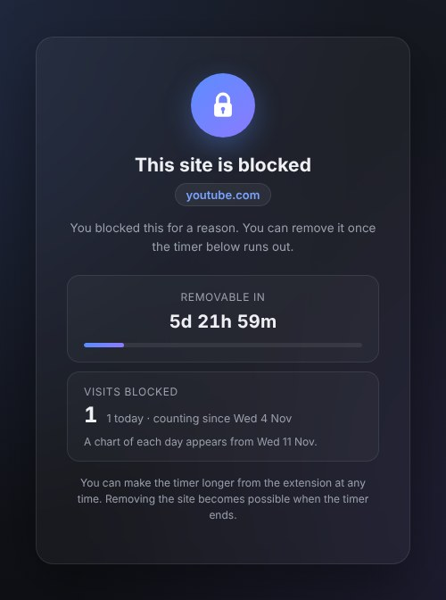

Free · No account · Open source
Holds firm when you don't.
Block a distracting site and pick a timer of up to 30 days. Until it ends, the block can't be removed. You can only extend it.

How it works
Three steps, and the hard part is done for you: the moment you'd give in, the block is still there.
-
Block a site
Type a link, or right-click the page you're on and choose Block this site. Subdomains and open tabs are blocked straight away.
-
Pick a timer
24 hours, 48 hours, 7 days or 30 days. Picked the wrong site? Undo it within 30 seconds.
-
Let it hold
Until the timer ends there's no Remove button. You can make it longer, never shorter.
Made for the days you need it
Days, not minutes: long enough to get through the stretch that matters.
-
Exam week
Lock YouTube until your last exam.
-
A 30-day break
A 30-day break from Instagram you can't cut short.
-
A weekend off the news
News and socials stay closed until Monday.
What you get
- A timer you can only extend. When it ends, the site stays blocked until you remove it.
- A count of how often a blocked site was tried, with a daily chart after a week.
- An honest notice if the blocker was switched off: when, and for how long.
- A quick review before risky blocks, such as google.com, which also takes Gmail with it.
- English and German, following your browser's language.
- Free for good. If paid extras come later, nothing free will be taken away.
What it doesn't do
- It isn't tamper-proof. Like any extension it can be switched off or removed, and removing it ends every block.
- It doesn't block in Incognito windows unless you allow it in the extension's details.
- It doesn't run on phones: Chrome on Android and iOS has no extensions.
- It blocks whole pages, not a YouTube video embedded in another site.
Your list never leaves your browser
No account, no servers, no analytics. The extension never reads the pages you visit, and the code is open for anyone to check.
- Your block list and its timers are stored only in your browser.
- Every store release is tagged on GitHub, so you can read the exact code you installed.
- The access to all websites is used only to show the countdown page in place of the sites on your list. Read the privacy policy.
The developer has disclosed that it will not collect or use your data.
Questions, answered plainly
Can I unblock a site early?
No. While a timer runs you can only make it longer. When it ends, the site stays blocked until you remove it.
I blocked the wrong site. What now?
Click Undo within 30 seconds: it's under the new block in the popup and on the site's countdown page. After that, the block can't be removed until its timer ends.
If you need the site before then, the only way round it is removing the extension, which deletes your whole block list with it.
Can't I just switch the extension off?
Yes. While it's off, nothing is blocked. It's built to stop impulse browsing, not to be impossible to remove. When you switch it back on, it tells you when, and for how long, it was off.
Why does it ask for access to all websites?
Chrome only lets an extension redirect a site it has access to, and you can block any site you like. The access is used only to show the countdown page instead of the sites on your list, to reload tabs already open on a site you block, and to see which site you're on when you ask to block it.
Does it block in Incognito windows?
Only if you allow it: open chrome://extensions, choose Details for Locked Site Blocker and turn on Allow in Incognito. In Edge, the setting is called Allow in InPrivate.
Is it really free?
Yes. Blocking and timers are free for good. If you'd like to support it, there's a button in the extension.
Something doesn't work.
Write to support@lockedsiteblocker.com, or open an issue on GitHub.